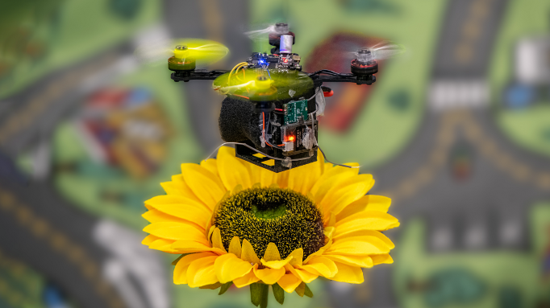
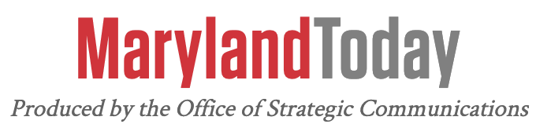
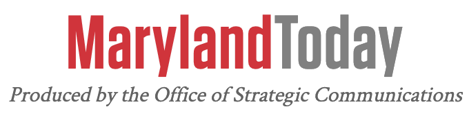

Pollination Using Bee-Quadrotors
The human fascination to mimic ultra-efficient flying beings like birds and bees hasled to a rapid rise in aerial robots in the recent decade. These aerial robots now posses a market share of over 10 Billion US Dollars. The future for aerial robots or Unmanned Aerial Vehicles (UAVs) which are commonly called drones is very bright because of their utility in a myriad of applications. I envision drones delivering packages to our homes, finding survivors in collapsed buildings, pollinating flowers, inspecting bridges, performing surveillance of cities, in sports and even as pets. In particular, quadrotors have become the go to platform for aerial robotics due to simplicity in their mechanical design, their vertical takeoff and landing capabilities and agility characteristics. Our eternal pursuit to improve drone safety and improve power efficiency has givenrise to the research and development of smaller yet smarter drones. Furthermore, smaller drones are more agile and task-distributable as swarms. Embodied Artificial Intelligence (AI) has been a big fuel to push this area further. Classically, the approach to designing such nano-drones possesses a strict distinction between perception, planning and control and relies on a 3D map of the scene that are used to plan paths that are executed by a control algorithm. On the contrary, nature’s never-ending quest to improve the efficiency of flyingagents through genetic evolution led to birds developing amazing eyes and brains tailored for agile flight in complex environments as a software and hardware co-design solution. In contrast, smaller flying agents such as insects that are at the other end of the size and computation spectrum adapted an ingenious approach – to utilize movement to gather more information. Early pioneers of robotics remarked at this observation and coined the concept of “Active Perception” which proposed that one can move in an exploratory way to gather more information to compensate for lack of computation and sensing. Such a controlled movement imposes additional constraints on the data being perceived to make the perception problem simpler. Inspired by this concept, in this thesis, I present a novel approach for algorithmicdesign on nano aerial robots (flying robots the size of a hummingbird) based on active perception by tightly coupling and combining perception, planning and control into sensorimotor loops using only on-board sensing and computation. This is done by re-imagining each aerial robot as a series of hierarchical sensorimotor loops where the higher ones require the inner ones such that resources and computation can be efficiently re-used. Activeness is presented and utilized in four different forms to enable large-scale autonomy at tight Size, Weight, Area and Power (SWAP) constraints not heard of before. The four forms of activeness are: 1. By moving the agent itself, 2. By employing an active sensor, 3. By moving a part of the agent’s body, 4. By hallucinating active movements. Next, to make this work practically applicable I show how hardware and software co-design can be performed to optimize the form of active perception to be used. Finally, I present the world’s first prototype of a RoboBeeHive that shows how to integrate multiple competences centered around active vision in all it’s glory.
Following is a list of contributions of this thesis:
- The world’s first functional prototype of a RoboBeeHive that can artificially pollinate flowers.
- The first method that allows a quadrotor to fly through gaps of unknown shape,location and size using a single monocular camera with only on-board sensing and computation.
- The first method to dodge dynamic obstacles of unknown shape, size and location on a quadrotor using a monocular event camera. Our series of shallow neural networks are trained in simulation and transfers to the real world without any finetuning or re-training.
- The first method to detect unmarked drones by detecting propellers. Our neural network is trained in simulation and transfers to the real world without any finetuning or re-training.
- A method to adaptively change the baseline of a stereo camera system for quadrotor navigation.
- The first method to introduce the usage of saliency to select features in a directvisual odometry pipeline.
- A comprehensive benchmark of software and hardware for embodied AI whichwould serve as a blueprint for researchers and practitioners alike.
References
Doctoral dissertation
Nitin J. Sanket, Doctoral dissertation, 2021.
Awarded the Larry S. Davis Award for Best Computer Science PhD Thesis at University of Maryland, 2021. News Article
Awarded the MDPI Drones 2021 PhD Thesis Award for a highly anticipated academic thesis that shows great potential, 2021. News Article

 



 Perception and Autonomous Robotics Group
Perception and Autonomous Robotics Group